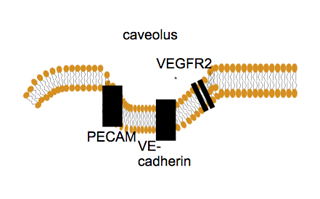
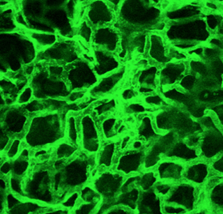
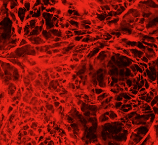
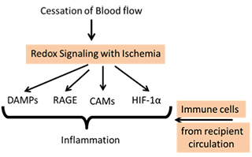

Shampa Chatterjee, PhD
Research Associate Professor
- - -
1 John Morgan
3620 Hamilton Walk
Philadelphia, PA 19104
215-898-9101
Fax: 215-898-0868
shampac@pennmedicine.upenn.edu
- - -
- - -
Quantum Dots (QDs) as tools to detect VCAM expression (yellow) in vivo. Orndorff et al. American Journal of Physiol. Lung Cell and Mol Physiol. 306 :L260-8, 2014.

The proposed Endothelial Mechanosome. Chatterjee, S: Mechanotransduction: Forces, Sensors and Redox Signaling. Antioxidants and Redox Signaling 20:868-71, 2014.

Endothelial lining of blood vessels (green) shows the dense vascular bed in the lungs.

Revascularization with hind limb ischemia (Browning et al. Antioxidants and Redox Signaling 20:872-86, 2014.

Mechanotransduction induced Signaling in the Stored Lung. Pulmonary Ischemia induced redox signaling drives Danger associated molecular patterns (DAMPs) such as HMGB-1 and its receptor RAGE, cellular adhesion molecules (CAMs) and the transcription factor HIF-1 α. This potentially predisposes the donor lung toward recruitment and adherence of immune cells from the recipient.
Shampa Chatterjee, PhD
Research Associate Professor of Physiology
Degrees & Education
PhD (Biochemistry) Indian Institute of Technology, Bombay, India, 1997
Fellow ITP, GBF, Gelleschaft fuer Biotechnologische Forschung, Braunschweig, Germany, 1996-1997
Fellow, Institut Fuer Medizinische Neurobiologie Otto von Guericke Universitaet Magdeburg, Germany, 1997-1999
Postdoctoral Fellow, Institute for Environmental Medicine, University of Pennsylvania Perelman School of Medicine, 1999-2002
Research Associate, Institute for Environmental Medicine, University of Pennsylvania Perelman School of Medicine, 2002-2006
Awards & Honors
2015 Hermann Rahn Award
2014 APS select for distinction in scholarship in Am J Physiol Lung Cell Mol Physiol (306 :L260-8, 2014)
2002 Julius Comroe, Jr. Award, American Physiological Society
2000 Caroline tum Suden Professional Excellence Award, American Physiology Society
1997 UNESCO International Training Program Fellowship -97, Braunschweig, Germany
1991 CSIR Research Fellowship Award, Ministry of Human Resources, New Delhi, India
1985 National Talent Search Scholarship, National Council Education, Research & Training, Govt. of India
Research Description
Organ transplantation involves a period of donor organ storage or ischemia i.e. stop of blood flow, followed by reattachment i.e. reinstatement of blood flow or reperfusion. A major challenge in the field is to develop and devise strategies that enable prolonged periods of ex vivo storage while preventing onset of injury. This is because any damage or injury does not merely eliminate the organ from the donor pool, but also triggers immune responses post-transplant which in turn require immunosuppression therapy. The broad focus of our research is in understanding the events that occur with organ storage so as to block the signaling cascade triggered by storage.
In general, ischemia or stop of blood flow leads to two changes 1) hypoxia or anoxia as oxygen levels are compromised and 2) loss of shear arising from removal of the mechanical component of blood flow. An exception to this occurs in the lung where stop flow causes “loss of shear” alone as oxygen supply is not affected because the lung parenchyma does not rely on blood flow for its cellular oxygen requirements. Alveolar ventilation or inflation can maintain normal alveolar PO2 and keeps the lung cells oxygenated for a reasonably long period of time. In systemic organs various degrees of hypoxia (and thus hypoxia induced signaling) cannot be avoided with storage. But in the lung, hypoxia can be limited or avoided altogether, and thus “loss of flow” signaling assumes greater importance than in systemic organs (where hypoxia induced signals would probably “overshadow” the effects of loss of flow). Thus in the context of lung storage prior to transplant, our scientific/clinical quest is to minimize the “loss of blood flow” induced signaling by understanding the signals that drive injury.
Our work over the past decade has shown that pulmonary vessels, specifically endothelial cells lining these vessels “sense” stop of flow and trigger a signaling cascade that leads to the generation of reactive oxygen species (ROS) via the deactivation of an ATP sensitive potassium (KATP) channel and activation of the enzyme NADPH oxidase 2 (NOX2). We reported extensively on the mechanosensing machinery (comprising of platelet endothelial cell adhesion molecule or PECAM-1 and caveolin-1) or mechanosome that is pivotal in ischemia induced signaling.
The pulmonary “endothelial mechanosignaling or mechanotransduction” paradigm can be translated in the clinical setting of lung transplantation, where perfusion is halted (ischemia) during donor lung storage but lung tissue remains oxygenated as the lung is inflated (under 2/3 inflated conditions prior to transplant) air in the alveoli.
Our recent data show that despite keeping the lungs oxygenated, the lack of pulmonary blood flow triggers the onset of an inflammation cascade in the stored lung. Currently we are engaged in understanding this cascade, namely the endothelial mechanosignaling-KATP channel-NOX2-ROS –inflammation link. We do this by monitoring the inflammatory mediators (damage associated molecular patterns or DAMPs, their corresponding pattern recognition receptors or PRRs, adhesion molecules, cellular adhesion molecules or CAMs) generated in human, mouse and porcine lungs with hypothermic storage. We propose to “treat” donor lung endothelium during the storage by inhibitors (of the mechanosignaling cascade) or by devices (perfusion circuits that maintain flow during the entire storage period). This focus on the donor organ rather than recipient’s immunosuppression could change the current clinical paradigms in pulmonary transplant medicine.
Click here for a full list of publications.
(searches the National Library of Medicine's PubMed database.)